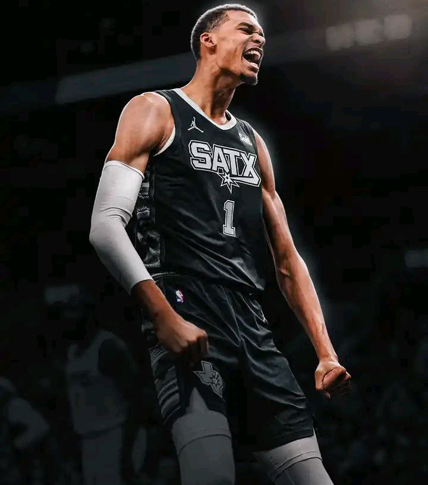
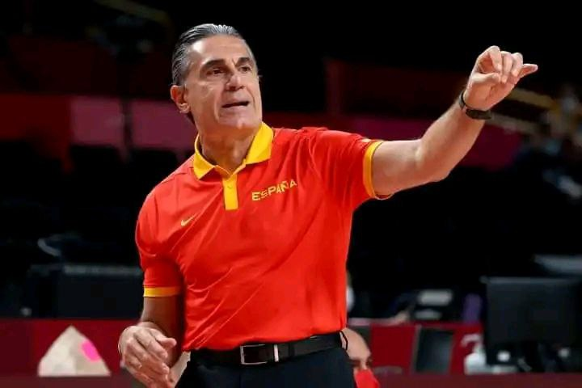
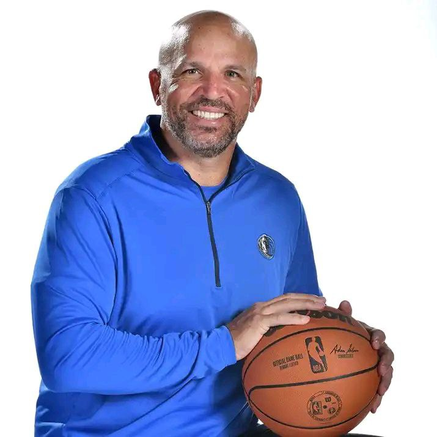

VITOR WENBANYAMA DÉSIGNÉ" ROOKIE DE L'ANNÉE
vitor wembanyama a été désigné "rookie de l'année", a annové ce lundi la NBA
validant la première saison convaincante du jeune prodige en NBA .
le jeune français drafté en numéro 1 par les San Antonio Spurs en juin 2023,décroche
ainsi un premier trophé

Scariolo prolongé jusqu'en 2028 en équipe masculine de d'espagne
L'italien Sergio Scariolo a prolongé son contrat de sélectionneur de l'équipe
d'espagne masculine jusqu'en 2028,a annoncé ce mercredi la fédération espagnol de basket.
Sélectionneur des roja depuis 2009, excepté une parenthère de deux ans de 2013 a 2015,
Scariolo l'a ménée vers un titre mondial (2019) et quatres européens,dont le dernier en date
(2009 2011 2015 2022),ainsi que deux médailles olympiques ,l'argent aux JO 2012 puis le bronze
en 2016.

DALLAS PROLONGE LE CONTRAT DE JASON KIDD
Les Dallas mavericks ont prolongé le contrat de leur entraineur principal
Jason kidd,qui faisait partie des noms cités comme futur coach
de Los Angeles Lakers , a annoncé la franchise texane de NBA dans un communiqué lundi.
"Nous sommes heureux que coach kidd poursuive son aventure dans notre équipe pour les années.
a venir apès cettez prolongation de contrat bien mérité ",a déclaré le propriétaire de le franchise ,
patrick dumont
